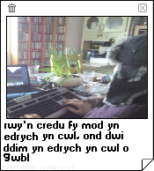

Amdanaf i
Hi yno, dwi'n Clive "James" Python, er fy mod yn fwy adnabyddus fel "DynTylluan". Yn blentyn, roedd gen i ddiddordeb cariad mewn cyfrifiaduron, fy ngariad fwyaf oedd y ZX Spectrum ('zed ex' nid 'zee ex'), mae fy nghariad i gyfrifiaduron yn cael ei gynnal hyd heddiw.

Rwy'n byw yn fy cartrefwlad sef Lloegr, lle mae'r tywydd yn eithaf da fel syndod.
Dydw i ddim yn gwybod pam mae pobl yn hoffi yfed te, rwy'n credu ei fod yn ofnadwy ac dydw i wyr ddim yn deall pam y byddai Yanks am gael te iâ, blimey gov!
Ar wahân i gynnal y wefan hon, hoffwn fynd ar Discord a bod yn pric enfawr i fy "ffrindiau" ffyri a weeaboo. Dydw i ddim yn ffyri neu weeaboo, dydw i ddim yn berchen arno siwt-ffyr neu berchen ar unrhyw mangas.
Rwy'n mwynhau treulio fy amser rhydd ar subreddits twp fel / r / BritishProblems / , / r / Vexillology / , / r / TotallyNotRobots / , / r / hmmm / , / r / BritishSuccess / ac eraill dim ond creeps fydd yn ei hoffi.
WPan nad wyf yn ffycin o gwmpas ar y We, hoffwn chwarae o gwmpas gyda Doom WADs ac ysgrifennu grap mae gen i y peli i alw " erthyglau ". Yr unig amser nad ydw i ar fy cyfrifiadur yw pan fyddaf yn chwarae fy ngherddoriaeth cach, rwy'n eithaf y ffan o recordiau finyl a mae gen i dros 20!!!
Os cawsoch y anrhydedd o fynd ar y wefan hon yn 2016, byddai gennych gweld
llawer o celf ASCII, Welp, nid yw mwyaf o'r ASCII yma ddim mwy, os ydych chi'n rhoi un cach, gallwch weld beth yw'r wefan hon edrych fel yn y gorffennol ... os ydych yn wir yn gofalu hynny yw.
A ddim am unrhyw reswm o gwbl, dyma wyth ffaith anhygoel amdanaf!
Ie, mae'n ddrwg gen i os ydych yn chwilio am fio difrifol neu rywbeth, SG dyn.
Edrychwch, byddaf yn ceisio rhoi bio difrifol i chi arnaf fy hun nawr;
Rydw i'n tueddu i ysgrifennu am bynciau tywyll, nid oherwydd fy mod i'n person ifanc caled, ond oherwydd fy mod yn hoffi dysgu am bobl eraill a pham maen nhw'n meddwl y ffordd y maen nhw'n ei wneud.
Rwy'n ffan o'r rhan fwyaf o gerddoriaeth, ond yr wyf yn tueddu i chwarae pethau cyn y 1990au (peidiwch â cael fi'n anghywir, gwn fod cerddoriaeth dda newydd) fel David Bowie, The Beatles,Judas Priest, Metallica ac unrhyw beth sy'n chwarae ar BBC Radio 6.
Byddwn yn dweud fy mod i'n ddyn y ddaear, efallai fy mod yn ymddangos fel person ifanc caled ar adegau, ond, hey, rydyn ni i gyd yn actio fel person ifanc caled weithiau.
Beth bynnag, mae'n rhaid i mi fynd nawr oherwydd mae fy nghefnogwyr yn aros ac wrth gwrs gan gefnogwyr, rwy'n golygu bobl sydd am gicio fy nannedd i mewn. 'Dyddiau Appi!
Pob hwyl, Clive
19/01/2016 Amser Prydeinig
Eisiau e-bostio fi? Uh, yn iawn yn siwr, dyma fy e-bost
A ti eisiau fy Twitter?!? Iawn...
Wnaeth rhywun dweud 'Gwallt'?